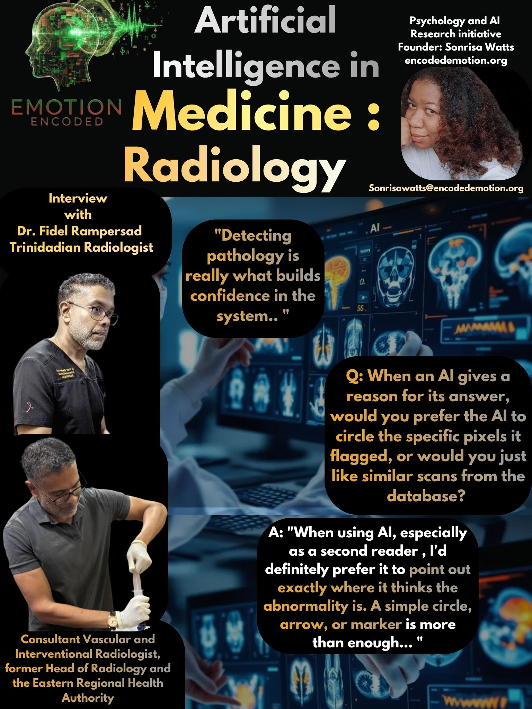

An Expert Brief featuring insights from Dr. Fidel Rampersad.
Dr. Fidel Shilendra Rampersad MBBS DM FRCR
Dr. Fidel Rampersad is a Consultant Vascular and Interventional Radiologist, Lecturer/Unit Lead in Radiology at the University of West Indies (UWI), St. Augustine Campus. He is also the Co-ordinator of the DM Radiology Programme, UWI.
He is an Honorary Consultant at Eric Williams Medical Sciences Complex (EWMSC), Trinidad, and former Head of Radiology and the Eastern Regional Health Authority (ERHA). He has over 20 years experience in the field of Radiology, and is a Consultant for several Private Centres and Non-Governmental Organizations.
He completed the DM Radiology Post Graduate Programme at UWI, and is a Fellow of the Royal College of Radiologists in the United Kingdom (UK), and well as a Fellow in Vascular and Interventional Radiology from the Singapore General Hospital, National University of Singapore. He has multiple publications in several international journals and has attended/presented at many Conferences and completed multiple Observerships, Courses and Electives, in various disciplines such as interventional radiology, breast radiology, vascular radiology, PET/CT and musculoskeletal radiology.
He is also a founding member and the Secretary of the Radiological Society of Trinidad and Tobago (RSTT), a member of the Radiological Society of North America (RSNA) and the Caribbean Society of Radiologists (CSR), is Chairman of the South Cancer Support Group and a Director of Vitas House.
When AI acts as a second set of eyes in the reading room, the value lies in precision over abstraction. Dr. Rampersad examines the necessity of visual evidence, the risk of diagnostic blunting in junior trainees, and why detecting pathology is the only true way to build clinical confidence in the machine.
He replied: "If AI is being used in radiology, especially as a second reader, I’d definitely prefer it to point out exactly where it thinks the abnormality is. A simple circle, arrow, or marker is more than enough. That way I can immediately look at the area and decide if I agree or not. It fits naturally into how we already read scans. Showing similar scans from a database isn’t really necessary in day-to-day practice. It might be useful for teaching, but when I’m reporting, I just want the AI to clearly show me what it’s seeing."
Dr. Rampersad emphasizes that utility in radiology is tied to spatial confirmation. The clinician does not need a library of comparisons; they need a pointer. By requesting a simple circle or arrow, the radiologist retains the final authority to agree or disagree, ensuring the AI serves the existing workflow rather than complicating it with redundant data.
He replied: "The routine stuff like measurements is helpful and saves time, but that’s not really where the real value is. I’d trust AI more if it can reliably pick up subtle findings or things that could easily be missed. That’s where it actually adds to what we do, acting as a second set of eyes. Ideally, it should do both, but if I had to choose, detecting pathology is what really builds confidence in the system."
While automation of routine tasks is convenient, Dr. Rampersad identifies the subtle finding as the psychological threshold for trust. For a radiologist, trust isn’t earned through efficiency, but through the AI's ability to augment human perception. Confidence in the system is built only when the machine proves it can see what the eye might miss.
He replied: "Yes, that’s definitely a risk. If trainees start depending on AI too early, they may stop pushing themselves to think through cases properly. Over time, that can blunt their diagnostic instincts. Radiology is very much about pattern recognition and clinical judgement, and those skills need to be developed actively. I think the best approach is for them to review the scan, come up with their own impression first, and then use AI as a way to check themselves. That way it becomes a learning tool rather than a crutch."
Rampersad is flagging a major risk here: diagnostic blunting. If juniors lean on AI before they’ve actually built their own clinical instincts, they’re going to lose that edge. To keep AI from becoming a total crutch, he’s calling for a clear workflow. Doctors should form their own opinion first and use the tech only to double-check. At the end of the day, pattern recognition has to be an active skill you practice, not just something you passively accept from a screen.
In radiology, AI is most valuable as a support system, not a replacement. Trust is anchored in the machine's ability to detect pathology that challenges the human eye, yet professional safety requires that the final call remains human. Efficiency is secondary to diagnostic accuracy.
Disclaimer: This brief summarizes findings from qualitative interviews conducted by Emotion Encoded. These insights are shared to foster transparency in the study of AI adoption in high-stakes fields.
Website: ENCODEDEMOTION.ORG • Independent Research Initiative